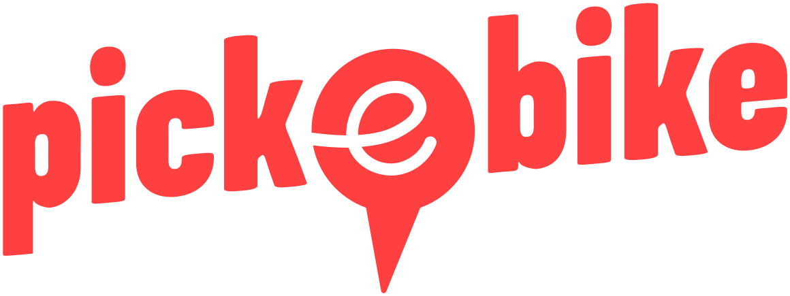

§ 09 · Consortium and funding
Partners.
[01] Funding

Grant SI/502720-01
Dec 2023 — Jan 2027
Dec 2023 — Jan 2027
Energy Research & Cleantech programme
[02] Academic Partners

Lead institution

Research partner
HSLU ITM · Mobility CC
Uni Basel WWZ · Env. Economics
Uni Basel WWZ · Env. Economics
[03] Implementation

Pick-e-Bike · free-floating

PubliBike Velospot · station-based
Operational trip data
Survey distribution
Survey distribution
[04] Sister project
FHNW field test · 2026
Tariff integration of shared two-wheelers
FHNW · HSLU · BVB · BLT · TNW
Pick-e-Bike · PubliBike Velospot
Real-world test of POTEBS's
multimodal-integration finding
multimodal-integration finding